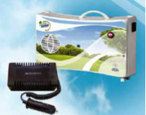

A Friorganic Tecnologias de Frio, Lda. foi concebida para dar resposta a um padrão
elevado de qualidade, no projecto e execução de câmaras frigoríficas para as indústrias
alimentar, farmacêutica e outras.
Representa em Portugal as prestigiadas marcas CANALETAS (dispensadores de água
e bebedouros) IBEROZONO (geradores de ozono para desinfecção e desodorização de
ar e água), cujas gamas de equipamentos são colocados no mercado português por uma
excelente relação qualidade/preço.
A Friorganic, Lda. é distribuidora oficial dos equipamentos de medida e controlo
TESTO, dos equipamentos para hotelaria SAVEMAH HOSTELERIA, MTRC, JIMO e
METALOCACHOEIRA.
A empresa estruturou-se com o objectivo de poder colaborar
com os seus clientes na pesquisa de uma solução concreta
que, em cada caso, permita ao utilizador a minimização dos
custos e optimização dos resultados do seu empreendimento.
não precisam de um certo equipamento
mas sim do equipamento certo para as suas necessidades.
Não precisam de um certo frio
mas sim do Friorganic para cada uma das suas actividades.
Não precisam de um certo ambiente
mas sim do ambiente certo para o desenvolvimento do seu negócio.
Temos consciência de que, dada a sofisticação tecnológica dos equipamentos, a venda de uma vitrina frigorífica ou de um forno misto de convecção e vapor instantâneo, deixou de ser um acto isolado: e constitui hoje o início de um diálogo entre o fornecedor - que assume a obrigação de prestar, a horas certas, a assistência pós-venda que se revelar necessária - e o Cliente - que tem a expectativa e o direito de com connosco optimizar os resultados do seu investimento.
A Friorganic quer tornar este diálogo útil para si.